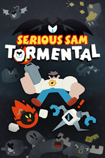

Serious Sam: Tormental
Serious Sam: Tormental
Detalles
|  | |
| Tiempo de juego | 43m 0s |
| Última actividad | 24/03/2021 16:46:52 |
| Añadido | 23/07/2021 17:30:27 |
| Modificado | Nunca |
| Estado de finalización | Jugado |
| Librería | Steam |
| Fuente | Steam |
| Plataforma | PC (Windows) |
| Fecha de lanzamiento | 02/04/2019 |
| Puntuación de la Comunidad | 76 |
| Puntuación de la Crítica | |
| Puntuación de usuario | |
| Género | Action Early Access Indie |
| Desarrollador | Croteam Gungrounds |
| Editor | Croteam Incubator |
| Característica | Cloud Saves Co-Op Full Controller Support Leaderboards Multi-Player Remote Play Together Shared/Split Screen Shared/Split Screen Co-Op Single Player |
| Enlaces | Community Hub Discussions Guides News Store Page PCGamingWiki |
| Tag | |
Descripción
Deep into an abandoned temple of Egypt lies a cursed artifact, an ancient device capable of the unthinkable; Could this be the key to enter the mind of the god of destruction: Mental?
This may be your only chance to delve deep into the twisted world of its mind, where [Sam]'s quest will lead him against reckless hordes of monsters product of Mental's wicked imagination. Blast your way through the most hideous corners of its mind, and prepare for a brain-melting showdown!
EARLY ACCESS ROADMAP
We look at the period between Early Access and until 1.0 final release in three parts: first, delivering more content, second, delivering a true ending and boss fight and finally, we want to have gameplay fully balanced by the time we go to 1.0 build. This also includes bug fixing and localization beyond just English.
FEATURES IN CURRENT GAME
(Please continue to check this area and the Steam forums for additions through the Early Access period)
The following features are available in the Early Access build:
5 Areas to explore
5 Boss fights to survive
3 Playable characters with unique abilities to master
35 Weapons to shoot with
30 Upgrades to mix and match
17 Weapon evolution upgrades
25 Quests
6+ NPCs
Local co-op
Mindmap
30+ Enemies
Inventory
Optional challenges
Shopkeeper, Vending Machine, Converter Machine, Reroll Machine, Armory
Interactive Objects - Bombs, Dynamite, Electric Bomb, Teleport, Bombs Spawner
Wheel of Misfortune
Traps - Various Spikes, Minefield, Turrets
HUB
Vault
Unlocks of content while playing
Chests, Mimic Chests, Locked Chests, Various Pickups
Highscores
Stats screen
Looping : loop #1, loop #2
Some alternative enemies and bosses while looping
Some level randomization
Voiced characters in English language
Some dialogues
FEATURES PLANNED FOR VERSION 1.0
The following features are not yet implemented and are planned as a part of the Early Access period. The timing and depth of these features are subject to change based on internal development milestone plan and community feedback:
Final Boss
Ending Sequence
Improved stats screen
Rebalance based on community feedback
More procedural generation and randomization
New Area - environment, boss, enemies, music track by Jukio Kallio
More Characters, including Bulb character
More Weapons
More Perks
More Quests
This may be your only chance to delve deep into the twisted world of its mind, where [Sam]'s quest will lead him against reckless hordes of monsters product of Mental's wicked imagination. Blast your way through the most hideous corners of its mind, and prepare for a brain-melting showdown!
Features:
- Fight against the wicked imaginations inside the mind of Mental, destructive god and Serious Sam's arch enemy, in an attempt to stop him once and for all.

- Rich with content and replayability: procedurally generated dungeons, characters with unique abilities, randomized pools of powerful upgrades, tons of fun Serious Weapons ™.

- The Vault ™: The final area contains many secrets and links to Mental’s identity, giving you more goals than just “defeat the final boss”. You will need to beat many challenges in order to stop Mental once and for all.

- Mindmap: discover hidden ideas inside of Mental's mind - what enemies, weapons, and items is he imagining to use in the real world? Acquire those ideas, and use them by yourself. Can you discover all of them?

- Every run, gather & combine random gun parts to construct unique powerful weapons.

- Quests: beat various challenges to unlock new worlds, characters, Serious Weapons ™ and upgrades. Over time, you will discover new places hidden inside of Mental's mind.

- Play together in local Co-op mode. Face stronger bosses, compete for (or share!) XP and revive each other with ankh pickups!

- Tight mechanics & controls. Gamepad friendly. Precise visual collision similar to 2D games.
- Created by fans of Geometry Wars, Nuclear Throne, Binding of Isaac, Serious Sam and Enter the Gungeon. <3
EARLY ACCESS ROADMAP
We look at the period between Early Access and until 1.0 final release in three parts: first, delivering more content, second, delivering a true ending and boss fight and finally, we want to have gameplay fully balanced by the time we go to 1.0 build. This also includes bug fixing and localization beyond just English.
FEATURES IN CURRENT GAME
(Please continue to check this area and the Steam forums for additions through the Early Access period)
The following features are available in the Early Access build:
5 Areas to explore
5 Boss fights to survive
3 Playable characters with unique abilities to master
35 Weapons to shoot with
30 Upgrades to mix and match
17 Weapon evolution upgrades
25 Quests
6+ NPCs
Local co-op
Mindmap
30+ Enemies
Inventory
Optional challenges
Shopkeeper, Vending Machine, Converter Machine, Reroll Machine, Armory
Interactive Objects - Bombs, Dynamite, Electric Bomb, Teleport, Bombs Spawner
Wheel of Misfortune
Traps - Various Spikes, Minefield, Turrets
HUB
Vault
Unlocks of content while playing
Chests, Mimic Chests, Locked Chests, Various Pickups
Highscores
Stats screen
Looping : loop #1, loop #2
Some alternative enemies and bosses while looping
Some level randomization
Voiced characters in English language
Some dialogues
FEATURES PLANNED FOR VERSION 1.0
The following features are not yet implemented and are planned as a part of the Early Access period. The timing and depth of these features are subject to change based on internal development milestone plan and community feedback:
Final Boss
Ending Sequence
Improved stats screen
Rebalance based on community feedback
More procedural generation and randomization
New Area - environment, boss, enemies, music track by Jukio Kallio
More Characters, including Bulb character
More Weapons
More Perks
More Quests